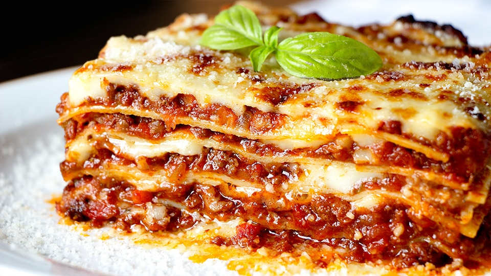

Lasagna
Home

Description:
La lasaña es un plato italiano clásico horneado y contundente, perfecto para compartir en
familia. Consiste en múltiples capas intercaladas de pasta, salsas y rellenos que se funden al calor del horno.
Ingredients:
- Pasta: Láminas de pasta para lasaña (precocidas o para cocer en el horno).
- Relleno de carne (Salsa Boloñesa): Carne molida (res o mezcla con cerdo), cebolla, ajo, zanahoria rallada,
salsa de tomate, pasta de tomate, vino tinto (opcional), sal, pimienta y hojas de laurel.
- Salsa blanca (Bechamel): Mantequilla, harina de trigo, leche fresca entera, sal, pimienta blanca y una pizca
de nuez moscada.
- Quesos: Queso mozzarella rallado (para las capas) y queso parmesano (para gratinar en la superficie).
Steps:
- Hacer la salsa Boloñesa: En una sartén grande con aceite, sofríe la cebolla, el ajo y la zanahoria. Añade la carne molida y cocínala hasta que dore. Incorpora la salsa de tomate, la pasta de tomate, las hojas de laurel, sal, pimienta y el vino tinto. Deja simular a fuego bajo por 20 minutos hasta que espese.
- Hacer la salsa Bechamel: En otra olla, derrite la mantequilla, añade la harina y cocina por 1 minuto sin parar de mover. Vierte la leche tibia poco a poco, batiendo enérgicamente para que no se formen grumos. Cocina hasta que espese y sazona con sal, pimienta blanca y nuez moscada.
- Armar las capas: En un molde para horno, esparce una capa delgada de bechamel en el fondo. Coloca una capa de láminas de pasta, luego una capa de boloñesa, un chorro de bechamel y espolvorea queso mozzarella. Repite este orden de capas hasta llenar el molde.
- Capa final y horneado: Termina la última capa con pasta, una cobertura generosa de salsa bechamel y abundante queso parmesano encima.
- Hornear y gratinar: Lleva al horno precalentado a 180 °C (350 °F) por 25 a 30 minutos (o según las instrucciones de tu pasta). Los últimos 5 minutos activa el grill para dorar el queso. Deja reposar 10 minutos antes de cortar.